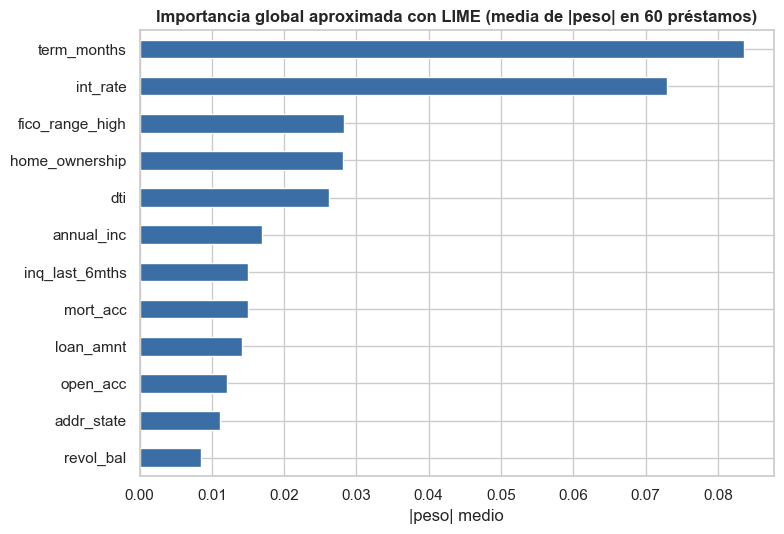
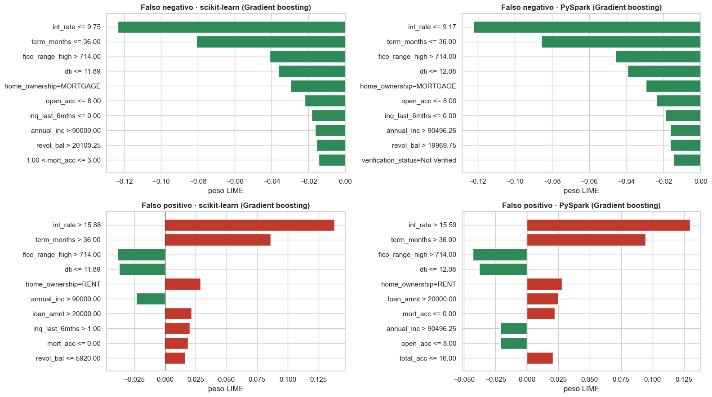

4 · Interpretabilidad con LIME#
¿Qué es LIME? Local Interpretable Model-agnostic Explanations. Un modelo de cientos de árboles es una «caja negra»: da una probabilidad pero no dice por qué. LIME explica una predicción concreta: perturba el préstamo (cambia un poco sus variables), evalúa el modelo en cada versión perturbada y ajusta un modelo lineal simple que imita al modelo solo cerca de ese préstamo. Los coeficientes de ese modelo lineal son la explicación: qué variables empujaron la predicción hacia «incumple» o hacia «paga».
Qué se explica. LIME se aplica al modelo de mayor AUC de cada entorno entre los que
entregan probabilidades (LinearSVC no las produce), sobre dos instancias mal clasificadas. Se
explican los mismos dos préstamos en los dos entornos, elegidos porque ambos modelos ganadores
fallan en ellos (sección 3.9):
Falso negativo: un préstamo que incumplió y que ambos modelos dejaron pasar con una probabilidad muy baja.
Falso positivo: un préstamo que se pagó y que ambos modelos marcaron como riesgoso.
Nota
LIME se aplica en el espacio de las variables originales (no en el de las columnas One-Hot),
para que «purpose = credit_card» se lea como una sola variable. El adaptador está en
src/lc_utils.py::LimeAdapter. La parte de PySpark se ejecutó dentro de la sesión de Spark del
capítulo 3 (el modelo vive allí); aquí se leen sus resultados (resultados/lime_spark.json).
Mostrar el código
import json
import platform
import sys
import time
import warnings
from pathlib import Path
import joblib
import lime
import matplotlib.pyplot as plt
import numpy as np
import pandas as pd
import seaborn as sns
from IPython.display import display
sys.path.insert(0, str(Path.cwd().parent))
from src import lc_models as lm # noqa: E402
from src import lc_utils as lc # noqa: E402
warnings.filterwarnings("ignore")
pd.set_option("display.width", 200)
pd.set_option("display.float_format", lambda v: f"{v:,.4f}")
sns.set_theme(style="whitegrid", context="notebook")
plt.rcParams.update({"figure.dpi": 100, "axes.titleweight": "bold"})
RESULTS, DATA_DIR = Path("../resultados"), Path("../data")
print(f"Python {platform.python_version()}")
Python 3.10.21
4.1 Datos y modelo de scikit-learn#
Se reconstruye la tabla con las mismas reglas y la misma partición, y se carga el modelo de mayor AUC entre los que dan probabilidades, entrenado en el capítulo 2.
Mostrar el código
m = lc.build_model_frame(lc.load_raw(usecols=lc.RAW_COLUMNS))
split = pd.read_parquet(DATA_DIR / "split_ids.parquet")
assert split["id"].equals(m["id"])
es_test = (split["split"] == "test").to_numpy()
train, test = m.loc[~es_test].reset_index(drop=True), m.loc[es_test].reset_index(drop=True)
art = joblib.load(DATA_DIR / "models" / "sk_lime_model.joblib")
prep, scaler, modelo, clave, THR = art["prep"], art["scaler"], art["model"], art["clave"], art["threshold"]
ids = json.loads((RESULTS / "instancias_lime.json").read_text())
print(f"Modelo de scikit-learn explicado: {lm.NOMBRES[clave]} · umbral de decisión (F1 fuera de pliegue) = {THR:.3f}")
def predict_df(df: pd.DataFrame) -> np.ndarray:
"""DataFrame de variables crudas -> probabilidad de incumplimiento (preprocesamiento + modelo)."""
x = prep.transform(df[lc.FEATURES]).astype(np.float32)
if scaler is not None:
x = scaler.transform(x)
return modelo.predict_proba(x)[:, 1]
casos = {"Falso negativo": ids["FN"]["id"], "Falso positivo": ids["FP"]["id"]}
filas = {k: test[test["id"] == v].reset_index(drop=True) for k, v in casos.items()}
for k, f in filas.items():
p = float(predict_df(f)[0])
print(f"{k}: préstamo {casos[k]} · probabilidad del modelo de scikit-learn = {p:.3f} · realidad: "
f"{'incumplió' if f['default'][0] == 1 else 'pagó'} · predijo {'incumple' if p >= THR else 'paga'} (umbral {THR:.3f})")
Modelo de scikit-learn explicado: Gradient boosting · umbral de decisión (F1 fuera de pliegue) = 0.224
Falso negativo: préstamo 36099806 · probabilidad del modelo de scikit-learn = 0.020 · realidad: incumplió · predijo paga (umbral 0.224)
Falso positivo: préstamo 55961482 · probabilidad del modelo de scikit-learn = 0.826 · realidad: pagó · predijo incumple (umbral 0.224)
4.2 Construcción del explicador#
LimeTabularExplainer necesita datos de referencia para conocer la distribución de cada variable
(cuartiles para discretizar las continuas, frecuencias de las categorías). Se usan 20 000 filas de
entrenamiento al azar (no del conjunto de prueba). Estos datos no entrenan nada: solo describen cómo suelen ser
las variables.
Mostrar el código
ref = train.sample(20_000, random_state=lc.SEED)
adapter = lc.LimeAdapter(ref, predict_df, extra=pd.concat(filas.values()))
4.3 Explicación de los dos errores (scikit-learn)#
Mostrar el código
explicaciones, tiempos = {}, {}
for k, f in filas.items():
t0 = time.time()
explicaciones[k] = adapter.explain(f, num_features=10, num_samples=5000)
tiempos[k] = time.time() - t0
e = explicaciones[k]
print(f"\n=== {k} (préstamo {casos[k]}) · explicación calculada en {tiempos[k]:.1f} s ===")
print(f"Probabilidad del modelo: {predict_df(f)[0]:.3f} · predicción del modelo lineal local: "
f"{e.local_pred[0]:.3f} · R² local = {e.score:.3f}")
display(pd.DataFrame(e.as_list(label=1), columns=["condición de la variable", "peso (hacia 'incumple' si > 0)"]))
=== Falso negativo (préstamo 36099806) · explicación calculada en 0.1 s ===
Probabilidad del modelo: 0.020 · predicción del modelo lineal local: -0.046 · R² local = 0.501
| condición de la variable | peso (hacia 'incumple' si > 0) | |
|---|---|---|
| 0 | int_rate <= 9.75 | -0.1234 |
| 1 | term_months <= 36.00 | -0.0807 |
| 2 | fico_range_high > 714.00 | -0.0410 |
| 3 | dti <= 11.89 | -0.0364 |
| 4 | home_ownership=MORTGAGE | -0.0298 |
| 5 | open_acc <= 8.00 | -0.0220 |
| 6 | inq_last_6mths <= 0.00 | -0.0183 |
| 7 | annual_inc > 90000.00 | -0.0164 |
| 8 | revol_bal > 20100.25 | -0.0156 |
| 9 | 1.00 < mort_acc <= 3.00 | -0.0144 |
=== Falso positivo (préstamo 55961482) · explicación calculada en 0.1 s ===
Probabilidad del modelo: 0.826 · predicción del modelo lineal local: 0.367 · R² local = 0.584
| condición de la variable | peso (hacia 'incumple' si > 0) | |
|---|---|---|
| 0 | int_rate > 15.88 | 0.1380 |
| 1 | term_months > 36.00 | 0.0858 |
| 2 | fico_range_high > 714.00 | -0.0388 |
| 3 | dti <= 11.89 | -0.0376 |
| 4 | home_ownership=RENT | 0.0287 |
| 5 | annual_inc > 90000.00 | -0.0236 |
| 6 | loan_amnt > 20000.00 | 0.0217 |
| 7 | inq_last_6mths > 1.00 | 0.0200 |
| 8 | mort_acc <= 0.00 | 0.0185 |
| 9 | revol_bal <= 5920.00 | 0.0164 |
Mostrar el código
fig, ax = plt.subplots(1, 2, figsize=(16, 5.2))
for a, (k, e) in zip(ax, explicaciones.items()):
lista = e.as_list(label=1)[::-1]
pesos = [w for _, w in lista]
a.barh([n for n, _ in lista], pesos, color=["#c0392b" if w > 0 else "#2e8b57" for w in pesos])
a.axvline(0, color="black", lw=0.8)
a.set(title=f"{k} · scikit-learn ({lm.NOMBRES[clave]})\nrojo: empuja hacia 'incumple' · verde: hacia 'paga'", xlabel="peso LIME")
plt.tight_layout()
plt.show()

Cómo se lee. Cada barra es una condición de una variable («int_rate > 15.88») y su peso: rojo aumenta la probabilidad de incumplimiento, verde la reduce, para ese préstamo. R² local indica qué tan bien el modelo lineal simple imita al modelo original cerca de esa instancia.
Importante
LIME explica al modelo, no a la realidad del préstamo: los pesos describen qué llevó al modelo a dar esa probabilidad, no una relación de causa y efecto. La fidelidad local aquí es moderada (R² entre 0.50 y 0.58 en scikit-learn, entre 0.51 y 0.55 en PySpark), así que estas explicaciones son descriptivas y no deben usarse como justificación causal, ni como base única de una decisión de crédito individual. Además, el modelo lineal local no reproduce bien la probabilidad del modelo en todos los casos: para el falso positivo predice 0.37 frente a 0.83 del modelo, y para el falso negativo llega a un valor negativo (−0.05).
4.4 ¿Es estable la explicación? (limitación de LIME)#
LIME muestrea al azar: dos ejecuciones sobre el mismo préstamo pueden dar explicaciones algo distintas. Se repite 5 veces el falso negativo con distinta semilla y se compara qué variables aparecen entre las 5 más importantes.
Mostrar el código
from lime.lime_tabular import LimeTabularExplainer # noqa: E402
fila = filas["Falso negativo"]
top = []
for seed in range(5):
ex = LimeTabularExplainer(adapter.encode(ref), feature_names=lc.FEATURES, categorical_features=adapter.cat_idx,
categorical_names={lc.FEATURES.index(c): adapter.levels[c] for c in lc.CATEGORICAL},
class_names=["pagado", "incumplido"], discretize_continuous=True, random_state=seed)
e = ex.explain_instance(adapter.encode(fila)[0], adapter.predict_proba, labels=(1,), num_features=5, num_samples=5000)
top.append([lc.FEATURES[i] for i, _ in sorted(e.as_map()[1], key=lambda t: -abs(t[1]))])
tabla_est = pd.DataFrame(top, index=[f"semilla {s}" for s in range(5)], columns=[f"top {i + 1}" for i in range(5)])
display(tabla_est)
freq = pd.Series([v for fila_ in top for v in fila_]).value_counts()
print("Frecuencia con la que cada variable aparece entre las 5 principales (de 5 ejecuciones):")
print(freq.to_string())
| top 1 | top 2 | top 3 | top 4 | top 5 | |
|---|---|---|---|---|---|
| semilla 0 | int_rate | term_months | fico_range_high | dti | home_ownership |
| semilla 1 | int_rate | term_months | fico_range_high | dti | home_ownership |
| semilla 2 | int_rate | term_months | fico_range_high | dti | home_ownership |
| semilla 3 | int_rate | term_months | fico_range_high | dti | home_ownership |
| semilla 4 | int_rate | term_months | fico_range_high | dti | home_ownership |
Frecuencia con la que cada variable aparece entre las 5 principales (de 5 ejecuciones):
int_rate 5
term_months 5
fico_range_high 5
dti 5
home_ownership 5
4.5 De lo local a lo global (agregando muchas explicaciones)#
LIME explica un préstamo a la vez. Para ver qué variables importan en general se promedia el valor absoluto del peso sobre 60 préstamos de prueba al azar.
Mostrar el código
muestra = test.sample(60, random_state=lc.SEED).reset_index(drop=True)
acum = pd.Series(0.0, index=lc.FEATURES)
t0 = time.time()
for i in range(len(muestra)):
e = adapter.explain(muestra.iloc[[i]], num_features=len(lc.FEATURES), num_samples=2000)
for j, w in e.as_map()[1]:
acum.iloc[j] += abs(w)
print(f"60 explicaciones en {time.time() - t0:.0f} s")
acum = (acum / len(muestra)).sort_values(ascending=False)
fig, ax = plt.subplots(figsize=(8, 5.5))
acum.head(12).iloc[::-1].plot.barh(ax=ax, color="#3b6ea5")
ax.set(title="Importancia global aproximada con LIME (media de |peso| en 60 préstamos)", xlabel="|peso| medio")
plt.tight_layout()
plt.show()
60 explicaciones en 3 s


4.6 Los mismos préstamos con el modelo de PySpark#
La sección 3.9 aplicó LIME dentro de la sesión de Spark al modelo de mayor AUC de PySpark entre los que dan probabilidades, con los mismos dos préstamos y los mismos parámetros de LIME (5 000 muestras perturbadas, 10 variables). Aquí se comparan las dos explicaciones.
Mostrar el código
sp = json.loads((RESULTS / "lime_spark.json").read_text())
print(f"Modelo de PySpark explicado: {lm.NOMBRES[sp['modelo']]}")
fig, ax = plt.subplots(2, 2, figsize=(16, 9))
for fila_ax, (k, nombre) in zip(ax, (("FN", "Falso negativo"), ("FP", "Falso positivo"))):
e_sk = explicaciones[nombre].as_list(label=1)[::-1]
e_sp = sp["instancias"][k]["pesos"][::-1]
for a, lista, titulo in ((fila_ax[0], e_sk, f"{nombre} · scikit-learn ({lm.NOMBRES[clave]})"),
(fila_ax[1], e_sp, f"{nombre} · PySpark ({lm.NOMBRES[sp['modelo']]})")):
pesos = [w for _, w in lista]
a.barh([n for n, _ in lista], pesos, color=["#c0392b" if w > 0 else "#2e8b57" for w in pesos])
a.axvline(0, color="black", lw=0.8)
a.set(title=titulo, xlabel="peso LIME")
plt.tight_layout()
plt.show()
def _vars(lista):
"""Nombres de las variables (sin la condición) de una explicación de LIME."""
out = []
for cond, _ in lista:
for v in lc.FEATURES:
if v in cond:
out.append(v)
break
return out
coinc = []
for k, nombre in (("FN", "Falso negativo"), ("FP", "Falso positivo")):
v_sk, v_sp = _vars(explicaciones[nombre].as_list(label=1)), _vars(sp["instancias"][k]["pesos"])
coinc.append({"instancia": nombre, "variables en común (de 10)": len(set(v_sk) & set(v_sp)),
"R² local scikit-learn": explicaciones[nombre].score, "R² local PySpark": sp["instancias"][k]["r2_local"],
"prob. scikit-learn": ids[k]["p_sklearn"], "prob. PySpark": ids[k]["p_spark"],
"tiempo scikit-learn (s)": tiempos[nombre], "tiempo PySpark (s)": sp["instancias"][k]["tiempo_s"]})
display(pd.DataFrame(coinc).set_index("instancia"))
Modelo de PySpark explicado: Gradient boosting


| variables en común (de 10) | R² local scikit-learn | R² local PySpark | prob. scikit-learn | prob. PySpark | tiempo scikit-learn (s) | tiempo PySpark (s) | |
|---|---|---|---|---|---|---|---|
| instancia | |||||||
| Falso negativo | 9 | 0.5008 | 0.5100 | 0.0201 | 0.0221 | 0.0998 | 0.5591 |
| Falso positivo | 8 | 0.5842 | 0.5538 | 0.8256 | 0.8631 | 0.0713 | 0.5573 |
4.7 LIME y PySpark: qué cambia y qué limita#
LIME no es distribuido: corre en la memoria de un solo proceso y necesita una función
predict_proba a la que llamar miles de veces. Con un modelo de PySpark eso significa:
Cada llamada es un viaje a la JVM: crear un DataFrame de Spark con las muestras perturbadas, aplicar el preprocesamiento y el modelo, y traer las probabilidades de vuelta. Es el caso más desfavorable para Spark (mucha latencia fija, poco cómputo por llamada). Sin Apache Arrow esa latencia llegó a ≈ 7–8 minutos por llamada (capítulo 3b).
Datos de referencia locales: LIME necesita una muestra de los datos en el driver para conocer las distribuciones. Con datos realmente masivos (que no caben en memoria) hay que recurrir a una muestra (aquí, 20 000 filas), lo que contradice el principio de no mover el conjunto de datos al driver.
Perturbaciones sin correlaciones: LIME muestrea cada variable por separado y puede crear préstamos imposibles (p. ej. tasa muy baja con FICO muy bajo), sobre los que el modelo nunca fue entrenado.
Costo por instancia: aunque en la sección 4.4 el orden de las variables no cambió entre semillas, LIME es aleatorio por diseño y hay que ejecutarlo para cada instancia; no escala a millones de préstamos.
En entornos distribuidos suelen preferirse explicaciones específicas de árboles (por ejemplo valores SHAP para árboles; Lundberg et al., 2020), que se calculan a partir de la estructura del propio modelo, sin perturbar los datos.
Mostrar el código
res_sk = json.loads((RESULTS / "sk_resultados.json").read_text())
lat = pd.DataFrame({"scikit-learn": res_sk["latencia_predict_s"], "PySpark (con Arrow)": sp["latencia_predict_s"]})
lat["PySpark / scikit-learn"] = lat.iloc[:, 1] / lat.iloc[:, 0]
lat.index.name = "filas por llamada"
display(lat.style.format({c: "{:.4f}" if c != "PySpark / scikit-learn" else "{:.0f}×" for c in lat.columns}))
print(f"Cada explicación de LIME hace UNA llamada de 5 000 muestras: scikit-learn ≈ {lat.iloc[-1, 0]:.2f} s · PySpark ≈ {lat.iloc[-1, 1]:.2f} s "
"por préstamo explicado (solo la predicción).")
| scikit-learn | PySpark (con Arrow) | PySpark / scikit-learn | |
|---|---|---|---|
| filas por llamada | |||
| 1 | 0.0002 | 0.2870 | 1188× |
| 100 | 0.0006 | 0.2746 | 489× |
| 5000 | 0.0135 | 0.5108 | 38× |
Cada explicación de LIME hace UNA llamada de 5 000 muestras: scikit-learn ≈ 0.01 s · PySpark ≈ 0.51 s por préstamo explicado (solo la predicción).